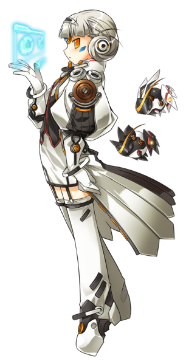

Eve, una nasod de clase elevada, una vez se llamó 'La pequeña reina nasod' cuando humanos y nasod coexistían en el antiguo Elios. Aquellos tiempos eran pacíficos y ellos trabajaban mano a mano con sus creadores. Sin embargo, el reinado de prosperidad era fugaz, como el poder de El que se debilitaba. La civilización nasod disminuyó sin el poder de su fuente. Ellos solicitaron ayuda de los humanos, pero rechazaron la petición, y la guerra entre nasods y humanos comenzó. Años pasaron con los humanos ganando la antigua guerra pero al mismo tiempo disminuía el poder de El. Sólo unos antiguos nasods sobrevivieron a la guerra y regresaron a sus cápsulas de preservación.
Por cientos de años, Eve esperó en su cápsula para evitar la catástrofe hasta que el fragmento de El volviera. Eve despertó para darse cuenta de que ella estaba perdida y sola en su nuevo presente. Reunió su energía restante y los conocimientos antiguos para revivir al Rey nasod y a su raza. Después de todo, una reina no puede estar sin un rey y Eve entendió que era lo mejor.
Años pasaron y el Rey nasod estaba en su misión de continuar la antigua guerra contra los humanos. Él y sus seguidores se volvieron corruptos y ya no reconocían a Eve. En medio de la guerra, un chaval pelirrojo y sus amigos destruyeron los últimos restos de la raza de Eve y acabaron con la vida del Rey nasod. Otra vez, Eve estaba perdida y sola en su presente resultando sus esfuerzos inútiles. ¡No toda la esperanza estaba perdida! Eve decidió recuperar el poder de El y esperar a revivir su raza de nuevo. Ella decidió seguir al chaval pelirrojo y sus amigos para encontrar el Cristal de El y revivir su raza. Era, después de todo, el primer chico que le decía que quería ser su amigo.
Eve continúa siguiendo al chico pelirrojo, pero pronto se vuelve un reto. Cuanto más viaja, los enemigos son más duros, llegando así Eve a su límite. Eve no fue construída para combatir, y sus módulos de batalla, Moby y Levy, tienen sus límites también. Por esto decide acceder a su base de datos y desarrollar una unidad guardián para ayudarla. Oberón, el Guardián de los nasods, ayudará a su reina mientras continúa con su viaje como Esperanza nasod.
Eve empezó a darse cuenta que había alcanzado el límite de combate con Oberón, así que decidió construir un robot nasod mejorado, llamado Ofelia para ayudar a Eve y a Oberón en combate. Juntos, Oberón y Ofelia combinan sus ataques, realizando ataques por sorpresa que ponen nerviosos a los enemigos. Con un reinado de numerosos sirvientes nasod, la "Gobernante elegante" trae la victoria de la batalla, ¡la Emperatriz nasod!Emperatriz nasod